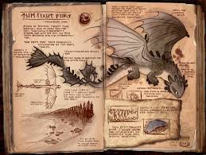
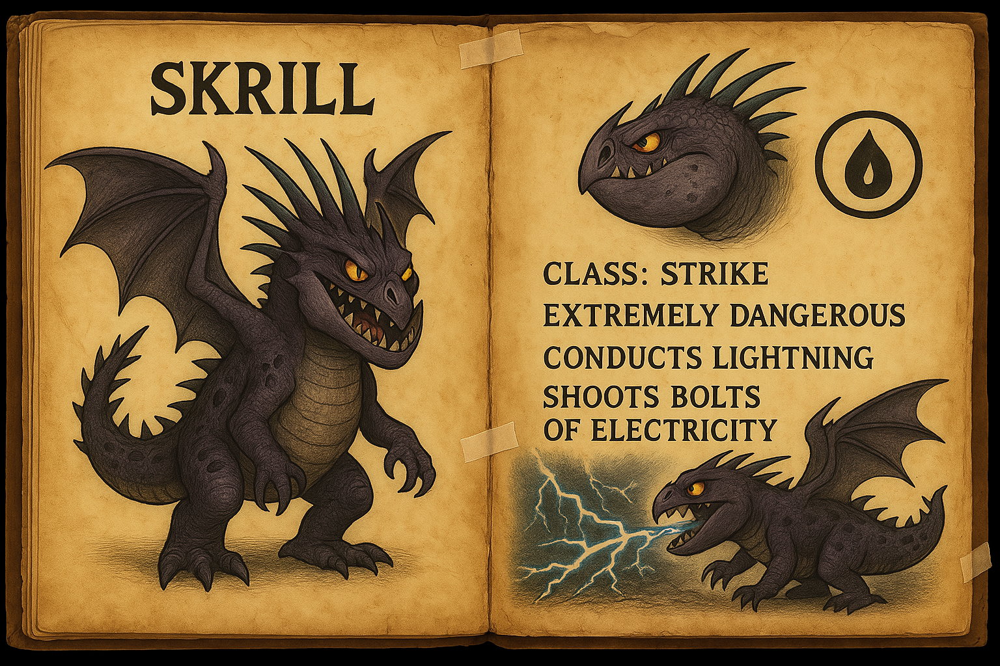

Ark Mods
Fury's Reach - Ark Map
Beschreibung: Eine neue, riesige Karte, die von den Furien aus der bekannten Welt inspiriert wurde. Bietet eine einzigartige Landschaft und viele Geheimnisse zu entdecken.
- Neue biomes und Regionen
- Herausfordernde Gegner und Bosskämpfe
- Verborgene Schätze und Ressourcen
HTYYD UI - Ark Mod
Beschreibung: Ein benutzerdefiniertes UI-Mod, das speziell für die "How to Train Your Dragon"-Karten und -Mods entwickelt wurde. Es verbessert die Benutzeroberfläche und sorgt für eine intuitivere Navigation.
- Benutzerfreundliches Interface
- Optimiert für verschiedene Bildschirmgrößen
- Integration von Dragon-Infos und Statistiken
HTYYD Dossiers - Ark Mod
Description: This mod adds all the important dossiers from the "How to Train Your Dragon" universe.
Unknow Dossier

Unfortunately, nothing is known about this dossier.
Night Fury

A Night Fury with incredible speed, stealth, and plasma explosions.
Hookfang

A Monstrous Nightmare that can self-ignite – perfect for close combat.
Deadly Nadder

The Gronckle is a bulky, slow-moving dragon with a tough exterior and a surprisingly gentle personality. Despite its short wings and awkward flight, it can hover in place and shoot explosive lava blasts from its mouth. Known for its loyalty and love of rocks, the Gronckle is a dependable companion in battle and everyday life.
Light Fury
The Light Fury is a sleek, mysterious dragon known for her speed, agility, and shimmering white scales. She can vanish in bursts of plasma and disappear into the sky, making her nearly impossible to track. Intelligent and cautious, the Light Fury is fiercely independent but deeply loyal once trust is earned.
Red Death

The Red Death is a massive, tyrannical dragon that rules over other dragons through fear. Hidden deep inside a volcanic lair, it forces smaller dragons to bring it food or face destruction. With its enormous size, powerful wings, and devastating fire breath, the Red Death is one of the most dangerous creatures in the dragon world.
Skrill
The Skrill is a fierce and elusive dragon that channels lightning through its body. It can ride storm clouds, store electricity in its spines, and release powerful lightning blasts. With its aggressive nature and ability to glide on lightning, the Skrill is one of the most dangerous and unpredictable dragons in the skies.
Terrible Terror

The Terrible Terror is one of the smallest dragons in the dragon world, about the size of a house cat. Despite its tiny size, it’s feisty, mischievous, and fiercely curious. Often seen in groups, Terrible Terrors can breathe small jets of fire and are known for sneaking around and stealing food.
Faul Ripper

Unfortunately, nothing is known about this dossier.
HTYYD Ragnarok Extension
Beschreibung: Eine Erweiterung für die Ragnarok-Karte, die zusätzliche Drachen und neue Gebiete basierend auf der "How to Train Your Dragon"-Welt hinzufügt.
- Neue Drachenarten aus HTTYD
- Erweiterte Gebiete für noch mehr Abenteuer
- Verbesserte Spielmechaniken